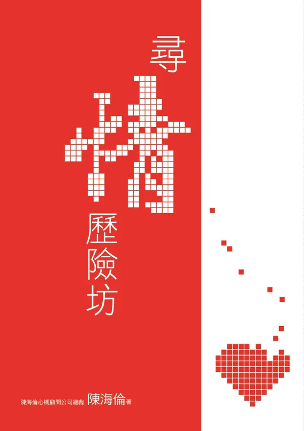

尋情歷險坊
一直遇不到對的人，問題可能不在運氣。
定價 NT$380
這本書裡有
- 一張專屬於你的對象檢查表
- 由同名工作坊整理成書
向出版社訂購：任選 3 本 NT$1,000，買五送一 NT$1,700
🎁 也很適合送給：一直遇不到對的人的朋友。看送禮推薦
也可以在網路書店購買
這本書適合你，如果……
- 你很想結婚，卻摸不清自己卡在哪裡。
- 你想知道自己在感情裡有哪些沒發現的盲點。
- 你想盤點自己的優勢，和需要改進的地方。
你為什麼還結不了婚？
找出心裡的按鈕，破除感情盲點。點一張最像你的卡片。
想看完整的方法與故事？我想讀這本
訂出你的結婚檢查表
大方向比小細節重要。先想清楚這幾件事，再去認識人。
可以接受的年齡差距
要不要生小孩（婚前一定要取得共識）
婚後想住在哪裡、過什麼樣的生活？
你自己最在意的一件事（選填）
我的結婚檢查表
陳海倫的提醒：抓緊婚姻的核心大方向與共同價值，不要拘泥於小細節的瑕疵，才能找到真正能一起成長的伴侶。
想看完整的方法與故事？我想讀這本
這本書在談什麼
許多人對愛情、婚姻存在著許多迷思，經過《尋情歷險坊》的開導之後，異口同聲都說希望能夠早個十年認識陳顧問，人生就會不一樣。
陳海倫為什麼寫這本書
她在顧問工作裡，一再看到：
- 大多數人從沒學過怎麼經營感情和婚姻，只憑感覺或錯誤的資訊，所以充滿盲點。
- 把找對象當成在百貨公司挑貨，只看見對方的缺點，看不見自己要改的地方。
- 害怕吃苦、害怕受傷，用各種理由逃避成長。
所以，她寫了這本書：
許多人上完同名工作坊後都說，真希望早十年認識陳顧問。寫成書，是為了讓更多人早一點拿到這些關鍵觀念，看見自己的盲點，培養經營幸福的能力。
讀完，你可能會帶走
- 一張專屬於你的對象檢查表。
- 由同名工作坊整理成書。
尋情四大基本功
先結婚，再談戀愛
婚前的戀愛常有隱瞞與幻想；婚後一起面對真實生活與柴米油鹽，才能談一輩子真正甜美的戀愛。
跪的藝術
婚姻像跳雙人舞，不是爭強好勝，而是主動承擔 200% 的責任，甘願為對方付出與改變。
五分鐘建立關係
訓練自己在 5 分鐘內建立舒服的人際關係、1 分鐘內表達情感，並精準對焦對方的需求。
一加一大於二
婚姻就是生活。兩個人同甘共苦、白手起家，為自己和下一代建立穩固繁榮的家。
紀錄片《尋情歷險記》
書裡寫的不是理論。陳海倫多年作媒的真實故事，被拍成得獎紀錄片《尋情歷險記》，由導演吳汰紝執導，並在多個國際影展放映。看完書中的方法，不妨看看這些方法在真實人生裡的樣子。
片中的聲音
「我九月要結婚了，但我缺一個新郎！」
片中經典告白
從不敢結婚、逃避責任，到踏上紅毯、收穫幸福。
學員的轉變
編輯想跟你說
- 這本書脫胎自同名工作坊，許多學員上完都說：真希望早十年認識陳顧問。
- 它會幫你做一張「專屬的對象檢查表」，也點出一般人遲遲無法結婚的盲點。
- 不只看別人，還帶你盤點自己的優勢籌碼與要改進的地方。
- 適合很想結婚、卻一直摸不清自己感情盲點在哪的人。
讀者的話
這本書還沒有刊登的讀者心得，歡迎成為第一個分享的人。